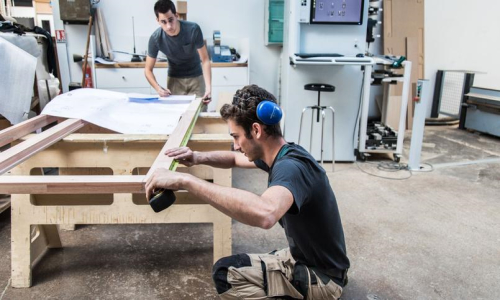
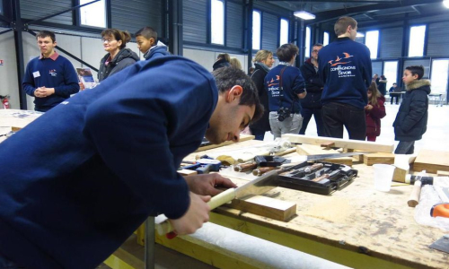

Accueil
Son histoire Le compagnonnage est la forme la plus ancienne de défense des travailleurs qui remonte au moins au XVème siècle. Les compagnons tendent alors à se grouper dans des associations d'entraide parallèles et plus ou moins clandestines, les « compagnonnages » afin aussi de se défendre contre les maîtres des corporations qui contrôlent et régissent les embauches. Interdit à la Révolution française, le compagnonnage réussit néanmoins à perdurer. Au début du XIXème siècle, le mouvement est à son apogée avec 200 000 membres. Il décline au XIXème siècle avec l’essor de l’industrie qui emploie des ouvriers peu qualifiés et l’apparition des syndicats. Il connaît aujourd’hui un véritable renouveau. On compte aujourd’hui en France 15 000 compagnons et le compagnonnage français a même été inscrit au patrimoine culturel immatériel de l'humanité en 2010 sous le titre « Le compagnonnage, réseau de transmission des savoirs et des identités par le métier », un moyen unique de transmettre des savoirs et savoir-faire».
- 
- 